10-11.22
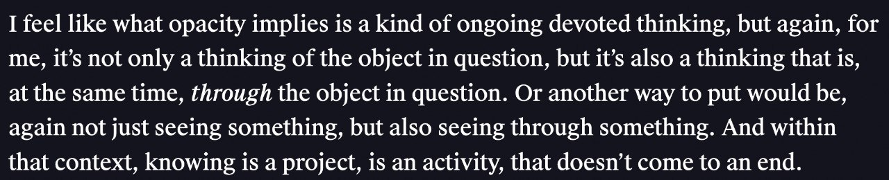
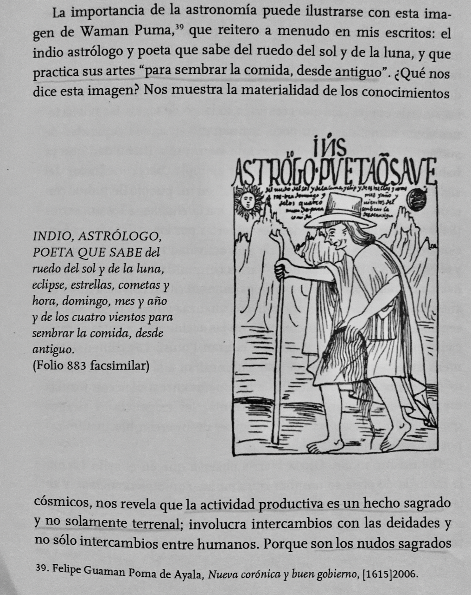
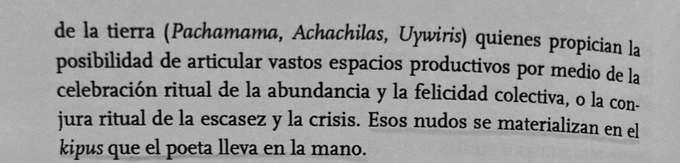
un mundo ch'ixi es posible - silvia rivera cusicanqui
mimicry and legendary psychastenia - roger caillois. link
on opacity (excerpt from poetics of relation) - édouard glissant. link
a poetics of the undercommons - fred moten. link
§ § § § §
<§§§333
https://motionward.bandcamp.com/track/halogen
https://boredlord.bandcamp.com/track/everyday-2gether
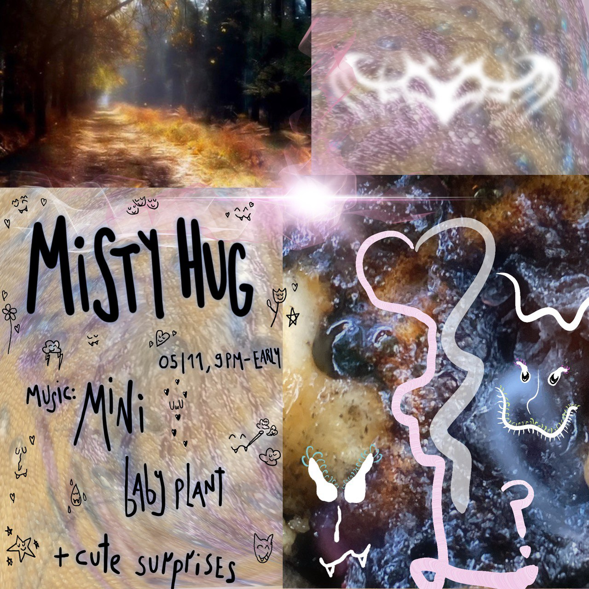
03.08.22
https://www.youtube.com/watch?v=1VI2g-n9mkI
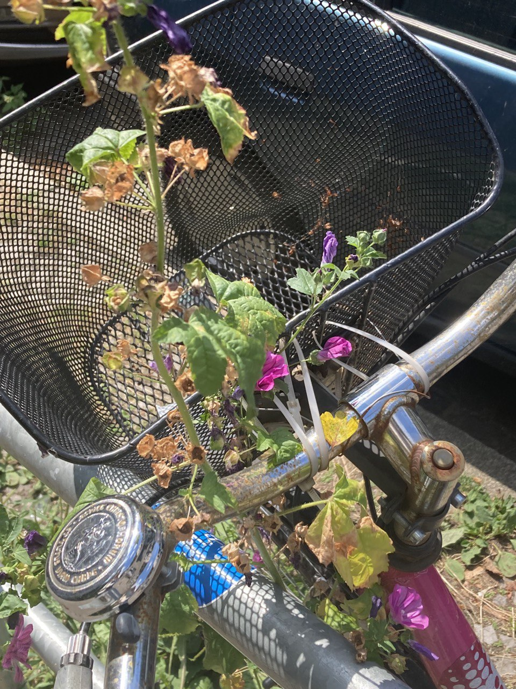
zoned in the sounds
https://jalbert.bandcamp.com/album/good-music-mixtape-vol-1
??.07.22
https://www.youtube.com/watch?v=IKCPATqf4Ws
â¤ï¸â€ğŸ©¹~~~â¤ï¸â€ğŸ©¹â¤ï¸â€ğŸ©¹â¤ï¸â€ğŸ©¹~~~â¤ï¸â€ğŸ©¹
https://snumusic.bandcamp.com/album/la-hora-azul
https://snumusic.bandcamp.com/album/la-hora-azul
https://snumusic.bandcamp.com/album/la-hora-azul
https://snumusic.bandcamp.com/album/la-hora-azul
â¤ï¸â€ğŸ©¹~~~â¤ï¸â€ğŸ©¹â¤ï¸â€ğŸ©¹â¤ï¸â€ğŸ©¹~~~â¤ï¸â€ğŸ©¹
??.06.22
revisitando este discazo uwu https://naffrecordings.bandcamp.com/album/blue
https://pontiacstreator.bandcamp.com/album/select-works-vol-iii
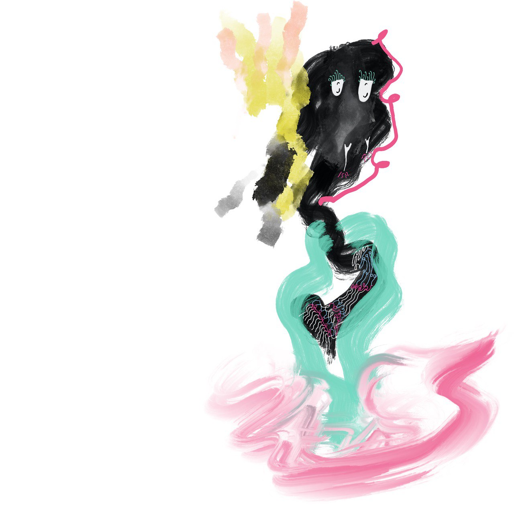
becoming sparse
??.05.22
https://youtu.be/l9OQjStWVGg
sueño en el que tenia tórax y brazos postizos e intentaba ocultarlo
https://youtu.be/jx5OafaCGI8
https://youtu.be/QKSkdKbpm8U
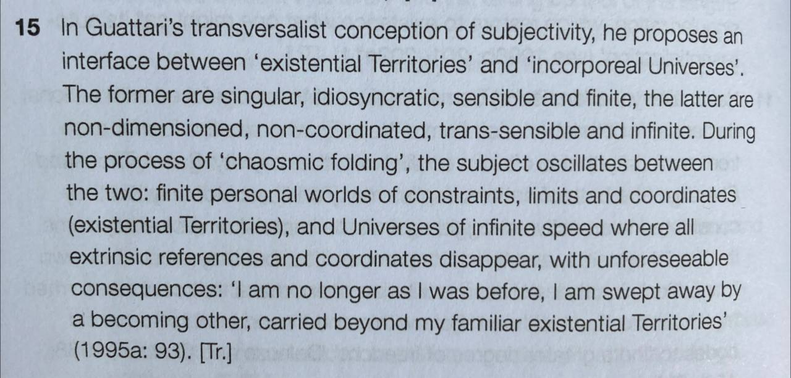
??.04.22
https://feliciaatkinson.bandcamp.com/album/image-language
https://foucault.info/documents/foucault.whatIsEnlightenment.en/
https://mitpress.mit.edu/books/structure-and-synthesis
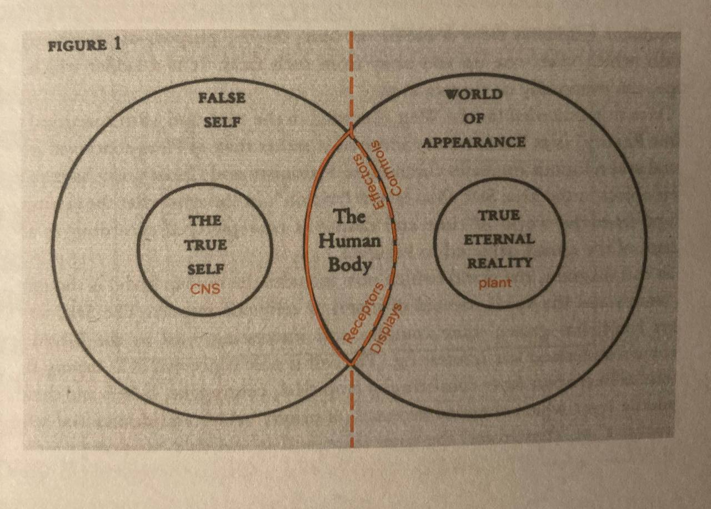
virginia woolf â¤ï¸â€ğŸ©¹ğŸ¥µ
https://room40.bandcamp.com/album/leaving-everything-to-be-desired
pensando y repensando en lo extremadamente hermoso que fue "Recurrence.Expansion"
de richard chartier. una caricia sutil enlongada; delineando el contacto.
30.03.22
https://soundcloud.com/mikemidnight/dido-riddim
https://www.youtube.com/watch?v=-Iy66Aiu0bk
17.12.21
📢 🙢 🙢 ESTE VIERNES 17.12 🙢 🙢 📢
surgimos de todos los rincones y bordes para presentar lo mejor en fiesta:
🙛 ⦠🙛 ⦠BAILE Nº1 ⦠🙛 ⦠🙛
amenizan la noche:
🙧 🙘 lilu aka capri luna (mallasilla) 🙘 🙧
🙧 🙘 maiq jordan (25vo anillo) 🙘 🙧
🙧 🙘 tapa campeon (velodromo alto irpavi) 🙘 🙧
🙧 🙘 cassis (sarre) 🙘 🙧
keywords: sonidos tectónicos, ritmo y sabor, un enigma espectral, wiggly steppas
COVER: 15 bs
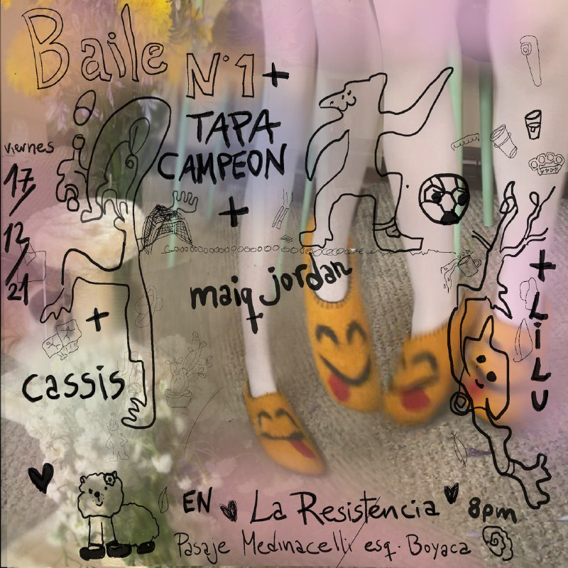
~~~~~~
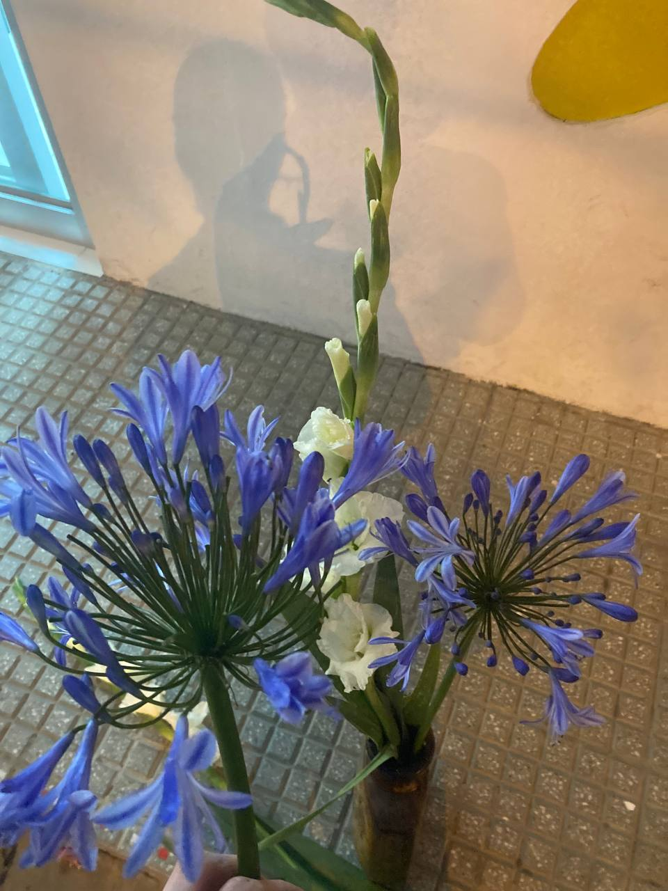
?.12.21
fascinado por el manejo del tiempo, esquinas y bordes de estos dos hermosos seres.
11.12.21
recontextualizado por la enormidad
?.12.21
hace poco pensaba ignorantemente que era super difÃcil crecer lirios, y aparentemente en casa aparecieron
y se esparcieron sin que nadie haga nada
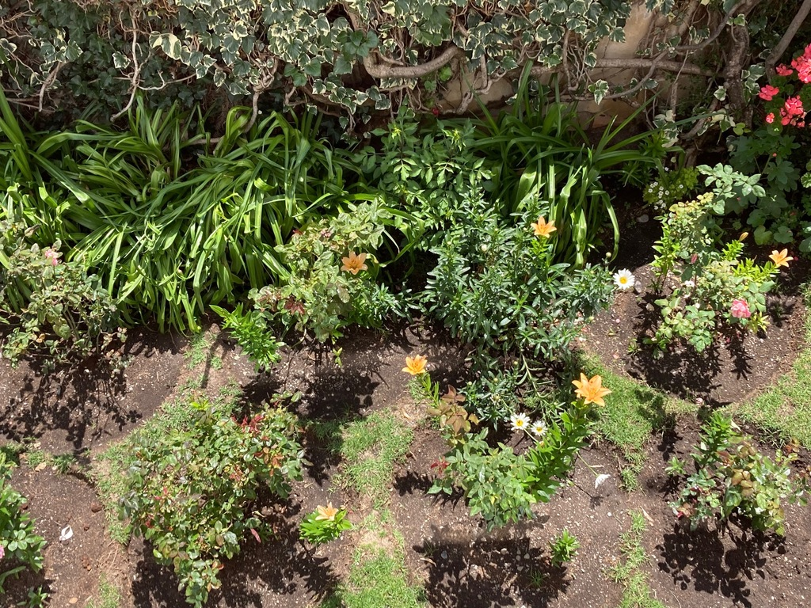
https://www.youtube.com/watch?v=iL01DG1PC6k
06.12.21
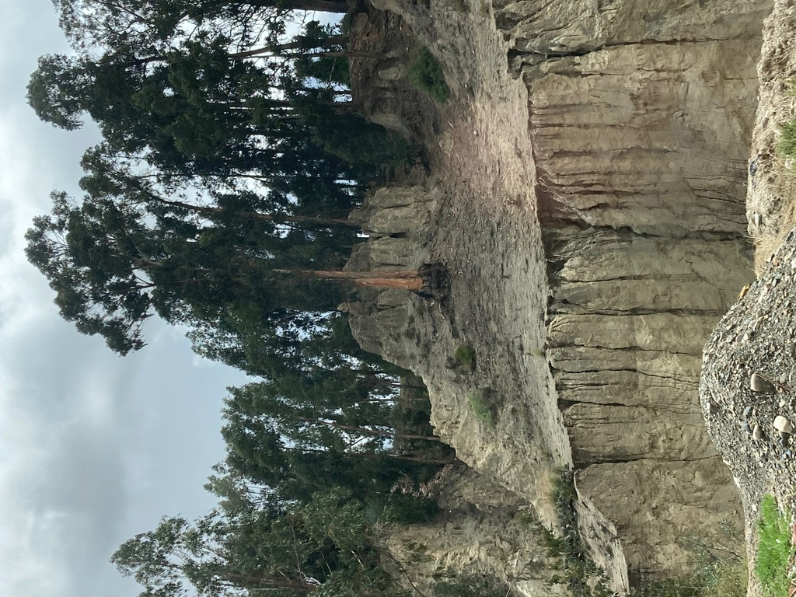
01.12.21
en el trance del espacio. memorias corporales.
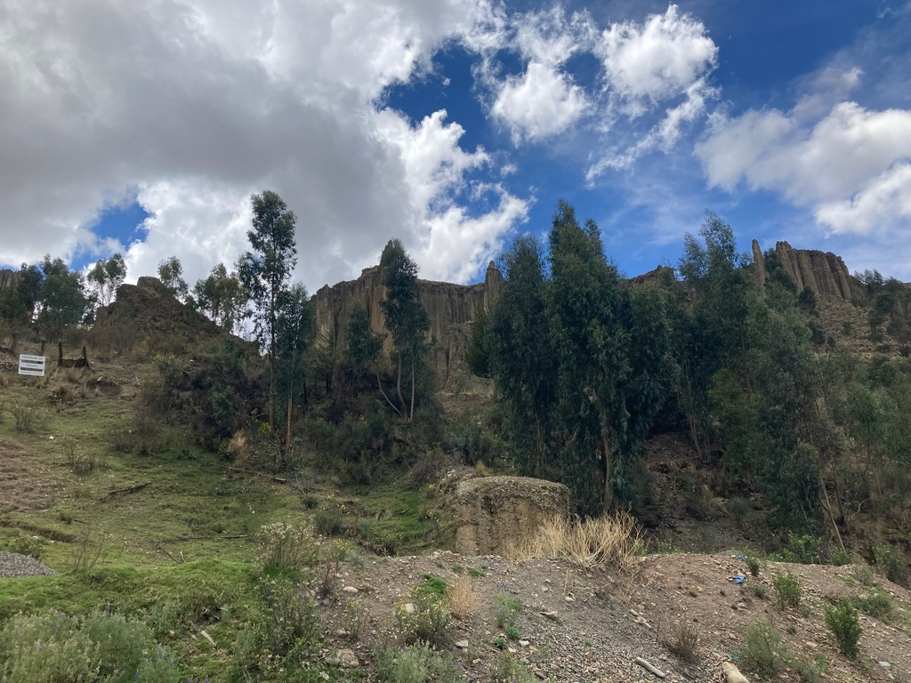
27.11.21
😌 😌
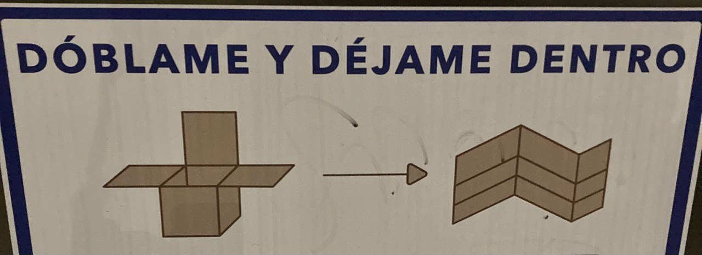
23.11.21
una o dos noches atrás soñe que comÃa pedazos de una polera blanca que tengo.
los cortaba en cuadrados perfectos y mezclaba con un plato bizarro.
22.11.21
soothing repetition
20.11.21
16.11.21
- there is no territory without a vector of exiting that territory. there is no deterritorialization without at the same time
an effort of reterritorialization elsewhere. https://youtu.be/SlNYVnCUvVg
14.11.21: hoy me dà cuenta de lo extraña que es la palabra "carnal" en mexicano lol
- refrains as manifestations of the virtual
12.11: anoche soñé que mi cabeza estaba inmersa entre ratas (y otros roedores?). estaba oscuro y no podÃa moverme.
sentÃa como se movian alrededor, caminando por encima de mi cara y revolviendo mi cabello. conjuré todas las fuerzas que tenÃa
para gritar o moverme, y después de lo que pareció una espera infinita me desperté sediento y con el grito en los labios.
10.11.21: subjectification as a tool for continuous resingularization

 ?.12.21 hace poco pensaba ignorantemente que era super difÃcil crecer lirios, y aparentemente en casa aparecieron y se esparcieron sin que nadie haga nada
?.12.21 hace poco pensaba ignorantemente que era super difÃcil crecer lirios, y aparentemente en casa aparecieron y se esparcieron sin que nadie haga nada 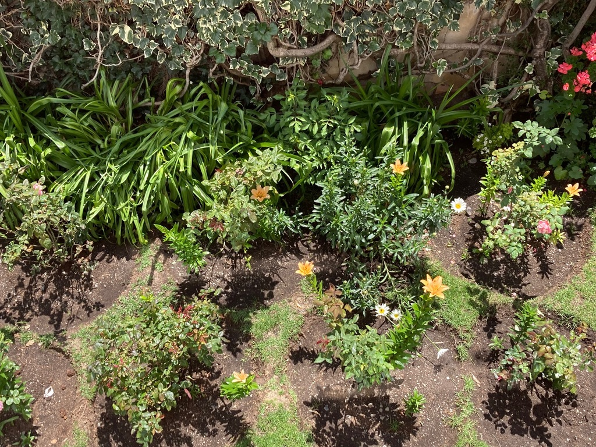https://www.youtube.com/watch?v=iL01DG1PC6k 06.12.21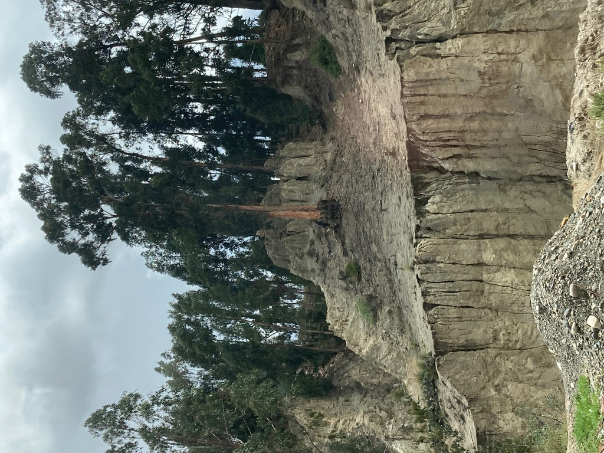01.12.21 en el trance del espacio. memorias corporales.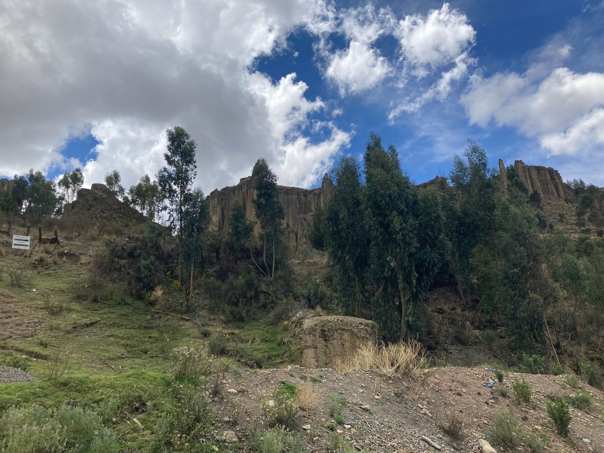27.11.21 😌 😌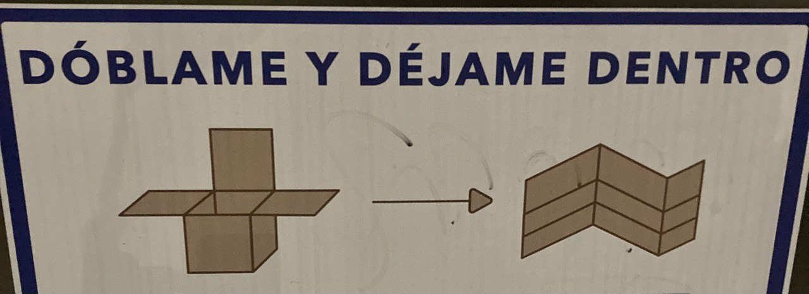23.11.21 una o dos noches atrás soñe que comÃa pedazos de una polera blanca que tengo. los cortaba en cuadrados perfectos y mezclaba con un plato bizarro.22.11.21 soothing repetition 20.11.21 16.11.21 - there is no territory without a vector of exiting that territory. there is no deterritorialization without at the same time an effort of reterritorialization elsewhere. https://youtu.be/SlNYVnCUvVg 14.11.21: hoy me dà cuenta de lo extraña que es la palabra "carnal" en mexicano lol - refrains as manifestations of the virtual 12.11: anoche soñé que mi cabeza estaba inmersa entre ratas (y otros roedores?). estaba oscuro y no podÃa moverme. sentÃa como se movian alrededor, caminando por encima de mi cara y revolviendo mi cabello. conjuré todas las fuerzas que tenÃa para gritar o moverme, y después de lo que pareció una espera infinita me desperté sediento y con el grito en los labios.10.11.21: subjectification as a tool for continuous resingularization
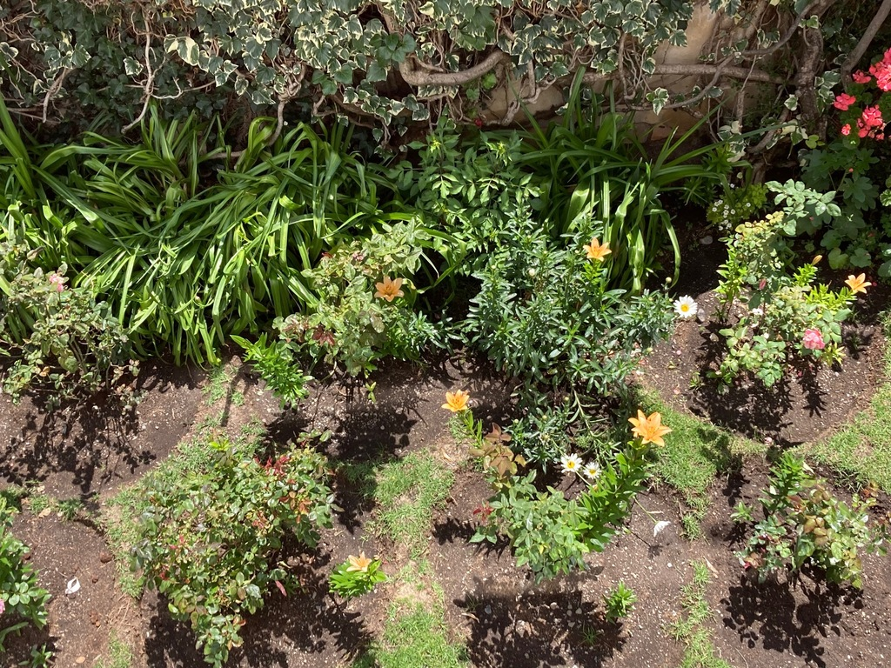https://www.youtube.com/watch?v=iL01DG1PC6k 06.12.21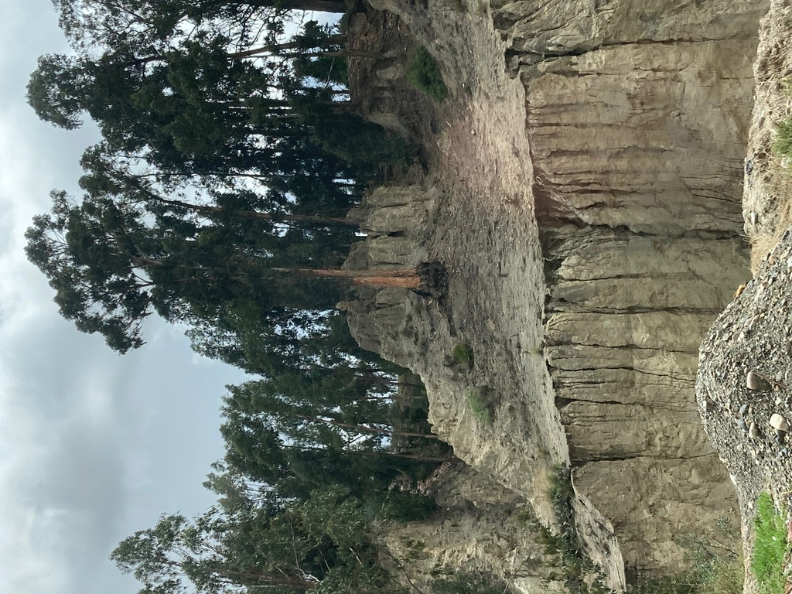01.12.21 en el trance del espacio. memorias corporales.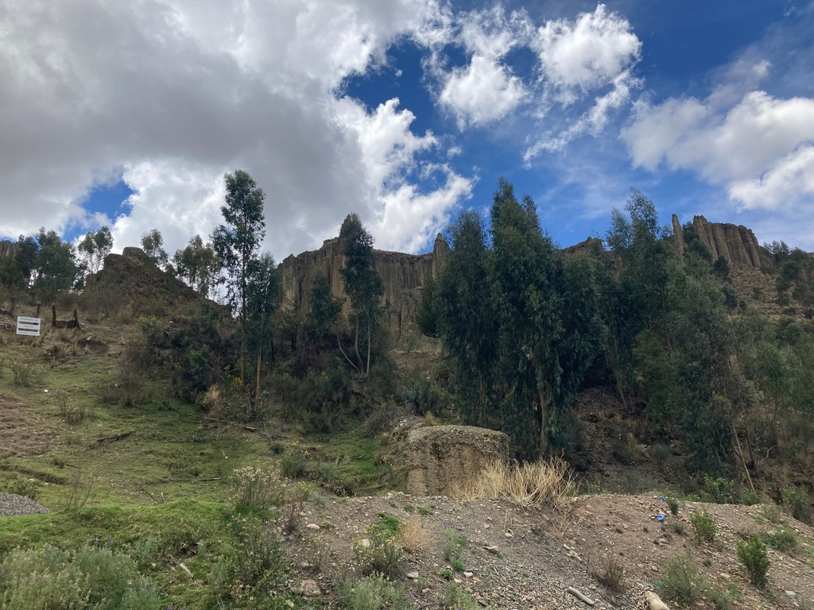27.11.21 😌 😌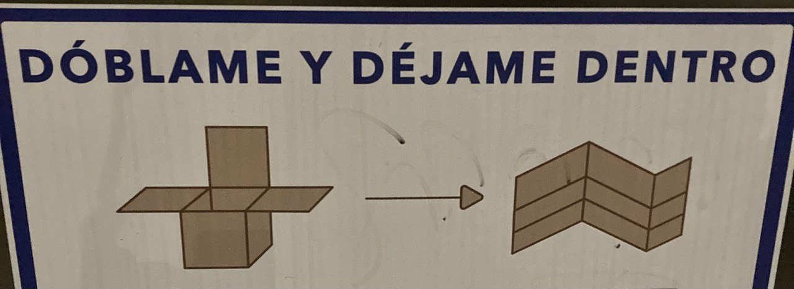23.11.21 una o dos noches atrás soñe que comÃa pedazos de una polera blanca que tengo. los cortaba en cuadrados perfectos y mezclaba con un plato bizarro.22.11.21 soothing repetition 20.11.21 16.11.21 - there is no territory without a vector of exiting that territory. there is no deterritorialization without at the same time an effort of reterritorialization elsewhere. https://youtu.be/SlNYVnCUvVg 14.11.21: hoy me dà cuenta de lo extraña que es la palabra "carnal" en mexicano lol - refrains as manifestations of the virtual 12.11: anoche soñé que mi cabeza estaba inmersa entre ratas (y otros roedores?). estaba oscuro y no podÃa moverme. sentÃa como se movian alrededor, caminando por encima de mi cara y revolviendo mi cabello. conjuré todas las fuerzas que tenÃa para gritar o moverme, y después de lo que pareció una espera infinita me desperté sediento y con el grito en los labios.10.11.21: subjectification as a tool for continuous resingularization